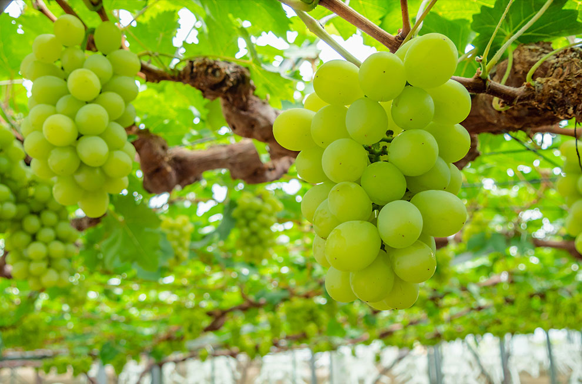

搭乘時間：2018/10/28-2019/03/30
| 航班號 | 航線 | 起飛時間 | 抵達時間 | 飛行日 |
| IT214 | 桃園－岡山 | 11:10 | 14:35 | 每日 |
| IT215 | 岡山－桃園 | 15:25 | 17:30 | 每周一、二、三、四、五、六 |
| 15:55 | 18:00 | 每周日 |

巴士：
▪機場至岡山站：搭乘機場接送巴士，車程約30分鐘，單程票價760日圓
▪機場至倉敷站：搭乘機場接送巴士，車程約35分鐘，單程票價1,130日圓


岡山後樂園
日本三大名園之一，榮獲日本米其林3星評價，擁有300年歷史，是岡山人氣No. 1的景點
倉敷美觀
古色古香的黑瓦白牆，楊柳低垂溪畔，寧靜的小鎮風光令人著迷，這裡和洋並存，風情別具
兒島牛仔褲街
牛仔迷必去的丹寧王國，日本牛仔褲的發源地，各式各樣牛仔相關衣物雜貨，好逛又好拍
白桃
來到桃太郎的故鄉怎能不吃桃？擁有「日本第一美味」的岡山白桃，清爽高雅的香甜果肉讓人一吃上癮

麝香葡萄
身為日本水果王國的岡山，擁有多種的麝香葡萄，皮薄肉多，香氣十足，入口後餘味裊裊，回味無窮
津山牛肥腸炒烏龍麵
岡山必吃的平民美食，使用新鮮的牛肥腸炒烏龍麵併佐上特製醬汁，風味獨特，是備受矚目的地方特產